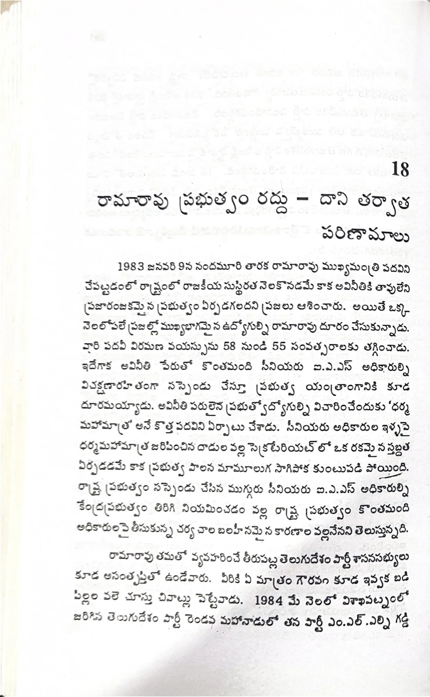

ముద్రిత పుట 292
scanతో మాన్యువల్గా ధృవీకరించిన పాఠ్యం

18 రామారావు ప్రభుత్వం రద్దు - దాని తర్వాత పరిణామాలు 1983 జనవరి 9న నందమూరి తారక రామారావు ముఖ్యమంత్రి పదవిని చేపట్టడంతో రాష్ట్రంలో రాజకీయ సుస్థిరత నెలకొనడమే కాక అవినీతికి తావులేని ప్రజారంజకమైన ప్రభుత్వం ఏర్పడగలదని ప్రజలు ఆశించారు. అయితే ఒక్క నెలలోపలే ప్రజల్లో ముఖ్యభాగమైన ఉద్యోగుల్ని రామారావు దూరం చేసుకున్నాడు. వారి పదవీ విరమణ వయస్సును 58 నుండి 55 సంవత్సరాలకు తగ్గించాడు. ఇదేగాక అవినీతి పేరుతో కొంతమంది సీనియరు ఐ.ఎ.ఎస్. అధికారుల్ని విచక్షణారహితంగా సస్పెండు చేస్తూ ప్రభుత్వ యంత్రాంగానికి కూడ దూరమయ్యాడు. అవినీతిపరులైన ప్రభుత్వోద్యోగుల్ని విచారించేందుకు ‘ధర్మ మహామాత్ర’ అనే కొత్త పదవిని ఏర్పాటు చేశాడు. సీనియరు అధికారుల ఇళ్ళపై ధర్మమహామాత్ర జరిపించిన దాడుల వల్ల సెక్రటేరియట్లో ఒక రకమైన స్తబ్దత ఏర్పడడమే కాక ప్రభుత్వ పాలన మామూలుగా సాగిపోక కుంటుపడిపోయింది. రాష్ట్ర ప్రభుత్వం సస్పెండు చేసిన ముగ్గురు సీనియరు ఐ.ఎ.ఎస్. అధికారుల్ని కేంద్రప్రభుత్వం తిరిగి నియమించడం వల్ల రాష్ట్ర ప్రభుత్వం కొంతమంది అధికారులపై తీసుకున్న చర్య చాల బలహీనమైన కారణాల వల్లనేనని తెలుస్తున్నది. రామారావు తమతో వ్యవహరించే తీరుపట్ల తెలుగుదేశం పార్టీ శాసనసభ్యులు కూడ అసంతృప్తితో ఉండేవారు. వీరికి ఏ మాత్రం గౌరవం కూడ ఇవ్వక బడి పిల్లల వలె చూస్తూ చివాట్లు పెట్టేవాడు. 1984 మే నెలలో విశాఖపట్నంలో జరిగిన తెలుగుదేశం పార్టీ రెండవ మహానాడులో తన పార్టీ ఎం.ఎల్.ఎల్ని గడ్డి